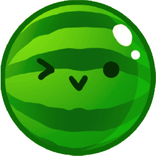
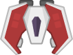

Арбуз: Соединяй Фрукты
Merge-аркада: капай фрукты, соединяй одинаковые и дорасти до арбуза. Комбо, квесты, забег дня, дзен-режим и рекорды.
Браузерные аркады от студии Wizzle Forge Games. Без установки, без регистрации — открыл и играешь. Работают на телефоне и компьютере.
Выбрать игру
Merge-аркада: капай фрукты, соединяй одинаковые и дорасти до арбуза. Комбо, квесты, забег дня, дзен-режим и рекорды.

Вертикальный космический шутер: сражайся с роем, покупай корабли, улучшай оружие и гонись за рекордом.
Тапалка-сёрфер в одну кнопку: лети сквозь космос, уклоняйся от препятствий и открывай новых персонажей.
Match-3 карнавал: меняй конфеты местами, собирай каскады и проходи уровень за уровнем.
Wizzle Forge Games делает лёгкие аркады, которые запускаются мгновенно: без установки, аккаунтов и ожидания. Все игры бесплатные, с рекламой и покупками внутри — так студия живёт и выпускает новые проекты.
Игры доступны в VK Играх, Яндекс Играх, RuStore и Google Play.
Почта: wizzleforgegames@gmail.com